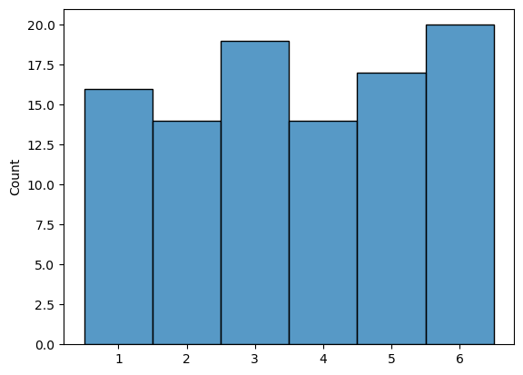
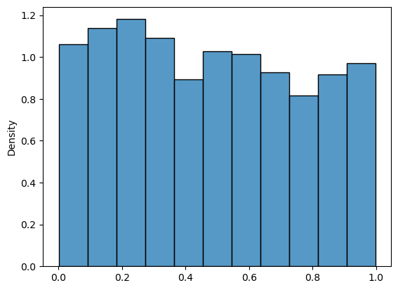
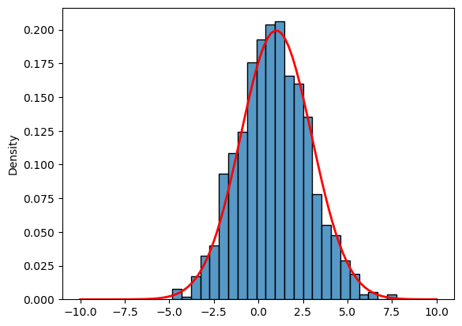
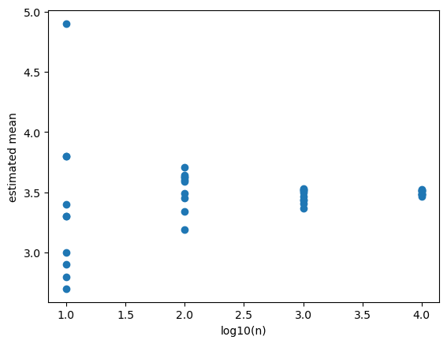
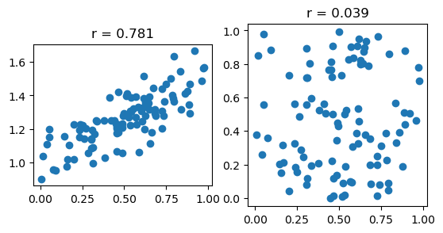
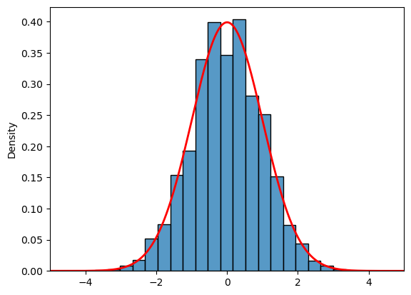

<!DOCTYPE html>


<html lang="en" >

  <head>
    <meta charset="utf-8" />
    <meta name="viewport" content="width=device-width, initial-scale=1.0" /><meta name="generator" content="Docutils 0.18.1: http://docutils.sourceforge.net/" />

    <title>Probability and Statistics &#8212; UCI Math 10, Spring 2024</title>
  
  
  
  <script data-cfasync="false">
    document.documentElement.dataset.mode = localStorage.getItem("mode") || "";
    document.documentElement.dataset.theme = localStorage.getItem("theme") || "light";
  </script>
  
  <!-- Loaded before other Sphinx assets -->
  <link href="../_static/styles/theme.css?digest=e353d410970836974a52" rel="stylesheet" />
<link href="../_static/styles/bootstrap.css?digest=e353d410970836974a52" rel="stylesheet" />
<link href="../_static/styles/pydata-sphinx-theme.css?digest=e353d410970836974a52" rel="stylesheet" />

  
  <link href="../_static/vendor/fontawesome/6.1.2/css/all.min.css?digest=e353d410970836974a52" rel="stylesheet" />
  <link rel="preload" as="font" type="font/woff2" crossorigin href="../_static/vendor/fontawesome/6.1.2/webfonts/fa-solid-900.woff2" />
<link rel="preload" as="font" type="font/woff2" crossorigin href="../_static/vendor/fontawesome/6.1.2/webfonts/fa-brands-400.woff2" />
<link rel="preload" as="font" type="font/woff2" crossorigin href="../_static/vendor/fontawesome/6.1.2/webfonts/fa-regular-400.woff2" />

    <link rel="stylesheet" type="text/css" href="../_static/pygments.css" />
    <link rel="stylesheet" href="../_static/styles/sphinx-book-theme.css?digest=14f4ca6b54d191a8c7657f6c759bf11a5fb86285" type="text/css" />
    <link rel="stylesheet" type="text/css" href="../_static/togglebutton.css" />
    <link rel="stylesheet" type="text/css" href="../_static/copybutton.css" />
    <link rel="stylesheet" type="text/css" href="../_static/mystnb.4510f1fc1dee50b3e5859aac5469c37c29e427902b24a333a5f9fcb2f0b3ac41.css" />
    <link rel="stylesheet" type="text/css" href="../_static/sphinx-thebe.css" />
    <link rel="stylesheet" type="text/css" href="../_static/design-style.4045f2051d55cab465a707391d5b2007.min.css" />
  
  <!-- Pre-loaded scripts that we'll load fully later -->
  <link rel="preload" as="script" href="../_static/scripts/bootstrap.js?digest=e353d410970836974a52" />
<link rel="preload" as="script" href="../_static/scripts/pydata-sphinx-theme.js?digest=e353d410970836974a52" />

    <script data-url_root="../" id="documentation_options" src="../_static/documentation_options.js"></script>
    <script src="../_static/jquery.js"></script>
    <script src="../_static/underscore.js"></script>
    <script src="../_static/_sphinx_javascript_frameworks_compat.js"></script>
    <script src="../_static/doctools.js"></script>
    <script src="../_static/clipboard.min.js"></script>
    <script src="../_static/copybutton.js"></script>
    <script src="../_static/scripts/sphinx-book-theme.js?digest=5a5c038af52cf7bc1a1ec88eea08e6366ee68824"></script>
    <script>let toggleHintShow = 'Click to show';</script>
    <script>let toggleHintHide = 'Click to hide';</script>
    <script>let toggleOpenOnPrint = 'true';</script>
    <script src="../_static/togglebutton.js"></script>
    <script>var togglebuttonSelector = '.toggle, .admonition.dropdown';</script>
    <script src="../_static/design-tabs.js"></script>
    <script>const THEBE_JS_URL = "https://unpkg.com/thebe@0.8.2/lib/index.js"
const thebe_selector = ".thebe,.cell"
const thebe_selector_input = "pre"
const thebe_selector_output = ".output, .cell_output"
</script>
    <script async="async" src="../_static/sphinx-thebe.js"></script>
    <script>window.MathJax = {"options": {"processHtmlClass": "tex2jax_process|mathjax_process|math|output_area"}}</script>
    <script defer="defer" src="https://cdn.jsdelivr.net/npm/mathjax@3/es5/tex-mml-chtml.js"></script>
    <script>DOCUMENTATION_OPTIONS.pagename = 'notes/prob_stat';</script>
    <link rel="index" title="Index" href="../genindex.html" />
    <link rel="search" title="Search" href="../search.html" />
    <link rel="next" title="week1 lec1" href="../lectures/week1_lec1.html" />
    <link rel="prev" title="OOP and Gradient Descent" href="OOP.html" />
  <meta name="viewport" content="width=device-width, initial-scale=1"/>
  <meta name="docsearch:language" content="en"/>
  </head>
  
  
  <body data-bs-spy="scroll" data-bs-target=".bd-toc-nav" data-offset="180" data-bs-root-margin="0px 0px -60%" data-default-mode="">

  
  
  <a class="skip-link" href="#main-content">Skip to main content</a>
  
  <input type="checkbox"
          class="sidebar-toggle"
          name="__primary"
          id="__primary"/>
  <label class="overlay overlay-primary" for="__primary"></label>
  
  <input type="checkbox"
          class="sidebar-toggle"
          name="__secondary"
          id="__secondary"/>
  <label class="overlay overlay-secondary" for="__secondary"></label>
  
  <div class="search-button__wrapper">
    <div class="search-button__overlay"></div>
    <div class="search-button__search-container">
<form class="bd-search d-flex align-items-center"
      action="../search.html"
      method="get">
  <i class="fa-solid fa-magnifying-glass"></i>
  <input type="search"
         class="form-control"
         name="q"
         id="search-input"
         placeholder="Search this book..."
         aria-label="Search this book..."
         autocomplete="off"
         autocorrect="off"
         autocapitalize="off"
         spellcheck="false"/>
  <span class="search-button__kbd-shortcut"><kbd class="kbd-shortcut__modifier">Ctrl</kbd>+<kbd>K</kbd></span>
</form></div>
  </div>
  
    <nav class="bd-header navbar navbar-expand-lg bd-navbar">
    </nav>
  
  <div class="bd-container">
    <div class="bd-container__inner bd-page-width">
      
      <div class="bd-sidebar-primary bd-sidebar">
        

  
  <div class="sidebar-header-items sidebar-primary__section">
    
    
    
    
  </div>
  
    <div class="sidebar-primary-items__start sidebar-primary__section">
        <div class="sidebar-primary-item">
  

<a class="navbar-brand logo" href="../intro.html">
  
  
  
  
  
    <p class="title logo__title">UCI Math 10, Spring 2024</p>
  
</a></div>
        <div class="sidebar-primary-item"><nav class="bd-links" id="bd-docs-nav" aria-label="Main">
    <div class="bd-toc-item navbar-nav active">
        
        <ul class="nav bd-sidenav bd-sidenav__home-link">
            <li class="toctree-l1">
                <a class="reference internal" href="../intro.html">
                    UC Irvine, Math 10, Fall 2023
                </a>
            </li>
        </ul>
        <ul class="current nav bd-sidenav">
<li class="toctree-l1"><a class="reference internal" href="../syllabus.html">Course Syllabus</a></li>
<li class="toctree-l1"><a class="reference internal" href="../final_project_instruction.html">Final Project Instruction</a></li>
<li class="toctree-l1"><a class="reference internal" href="python_review.html">Python review</a></li>

<li class="toctree-l1"><a class="reference internal" href="OOP.html">OOP and Gradient Descent</a></li>


<li class="toctree-l1 current active"><a class="current reference internal" href="#">Probability and Statistics</a></li>
<li class="toctree-l1"><a class="reference internal" href="../lectures/week1_lec1.html">week1 lec1</a></li>
<li class="toctree-l1"><a class="reference internal" href="../lectures/week1_lec2.html">week1 lec2</a></li>
<li class="toctree-l1"><a class="reference internal" href="../lectures/week1_lec3.html">week1 lec 3</a></li>
<li class="toctree-l1"><a class="reference internal" href="../homework/homework1.html">Homework 1 (Due 4/12 11:59 PM)</a></li>
</ul>

    </div>
</nav></div>
    </div>
  
  
  <div class="sidebar-primary-items__end sidebar-primary__section">
  </div>
  
  <div id="rtd-footer-container"></div>


      </div>
      
      <main id="main-content" class="bd-main">
        
        

<div class="sbt-scroll-pixel-helper"></div>

          <div class="bd-content">
            <div class="bd-article-container">
              
              <div class="bd-header-article">
<div class="header-article-items header-article__inner">
  
    <div class="header-article-items__start">
      
        <div class="header-article-item"><label class="sidebar-toggle primary-toggle btn btn-sm" for="__primary" title="Toggle primary sidebar" data-bs-placement="bottom" data-bs-toggle="tooltip">
  <span class="fa-solid fa-bars"></span>
</label></div>
      
    </div>
  
  
    <div class="header-article-items__end">
      
        <div class="header-article-item">

<div class="article-header-buttons">


<div class="dropdown dropdown-download-buttons">
  <button class="btn dropdown-toggle" type="button" data-bs-toggle="dropdown" aria-expanded="false" aria-label="Download this page">
    <i class="fas fa-download"></i>
  </button>
  <ul class="dropdown-menu">
      
      
      
      <li><a href="../_sources/notes/prob_stat.ipynb" target="_blank"
   class="btn btn-sm btn-download-source-button dropdown-item"
   title="Download source file"
   data-bs-placement="left" data-bs-toggle="tooltip"
>
  

<span class="btn__icon-container">
  <i class="fas fa-file"></i>
  </span>
<span class="btn__text-container">.ipynb</span>
</a>
</li>
      
      
      
      
      <li>
<button onclick="window.print()"
  class="btn btn-sm btn-download-pdf-button dropdown-item"
  title="Print to PDF"
  data-bs-placement="left" data-bs-toggle="tooltip"
>
  

<span class="btn__icon-container">
  <i class="fas fa-file-pdf"></i>
  </span>
<span class="btn__text-container">.pdf</span>
</button>
</li>
      
  </ul>
</div>


<button onclick="toggleFullScreen()"
  class="btn btn-sm btn-fullscreen-button"
  title="Fullscreen mode"
  data-bs-placement="bottom" data-bs-toggle="tooltip"
>
  

<span class="btn__icon-container">
  <i class="fas fa-expand"></i>
  </span>

</button>


<script>
document.write(`
  <button class="theme-switch-button btn btn-sm btn-outline-primary navbar-btn rounded-circle" title="light/dark" aria-label="light/dark" data-bs-placement="bottom" data-bs-toggle="tooltip">
    <span class="theme-switch" data-mode="light"><i class="fa-solid fa-sun"></i></span>
    <span class="theme-switch" data-mode="dark"><i class="fa-solid fa-moon"></i></span>
    <span class="theme-switch" data-mode="auto"><i class="fa-solid fa-circle-half-stroke"></i></span>
  </button>
`);
</script>

<script>
document.write(`
  <button class="btn btn-sm navbar-btn search-button search-button__button" title="Search" aria-label="Search" data-bs-placement="bottom" data-bs-toggle="tooltip">
    <i class="fa-solid fa-magnifying-glass"></i>
  </button>
`);
</script>
<label class="sidebar-toggle secondary-toggle btn btn-sm" for="__secondary"title="Toggle secondary sidebar" data-bs-placement="bottom" data-bs-toggle="tooltip">
    <span class="fa-solid fa-list"></span>
</label>
</div></div>
      
    </div>
  
</div>
</div>
              
              

<div id="jb-print-docs-body" class="onlyprint">
    <h1>Probability and Statistics</h1>
    <!-- Table of contents -->
    <div id="print-main-content">
        <div id="jb-print-toc">
            
            <div>
                <h2> Contents </h2>
            </div>
            <nav aria-label="Page">
                <ul class="visible nav section-nav flex-column">
<li class="toc-h2 nav-item toc-entry"><a class="reference internal nav-link" href="#random-variables">Random Variables</a><ul class="nav section-nav flex-column">
<li class="toc-h3 nav-item toc-entry"><a class="reference internal nav-link" href="#discrete-random-variables">Discrete Random Variables</a></li>
<li class="toc-h3 nav-item toc-entry"><a class="reference internal nav-link" href="#continuous-random-variables">Continuous Random Variables</a></li>
</ul>
</li>
<li class="toc-h2 nav-item toc-entry"><a class="reference internal nav-link" href="#distributions">Distributions</a></li>
<li class="toc-h2 nav-item toc-entry"><a class="reference internal nav-link" href="#expectation">Expectation</a></li>
<li class="toc-h2 nav-item toc-entry"><a class="reference internal nav-link" href="#variance">Variance</a></li>
<li class="toc-h2 nav-item toc-entry"><a class="reference internal nav-link" href="#covariance">Covariance</a></li>
<li class="toc-h2 nav-item toc-entry"><a class="reference internal nav-link" href="#pearson-correlation">(Pearson) Correlation</a></li>
<li class="toc-h2 nav-item toc-entry"><a class="reference internal nav-link" href="#independence">Independence</a><ul class="nav section-nav flex-column">
<li class="toc-h3 nav-item toc-entry"><a class="reference internal nav-link" href="#independence-and-covariance">Independence and Covariance</a></li>
</ul>
</li>
<li class="toc-h2 nav-item toc-entry"><a class="reference internal nav-link" href="#causality">Causality</a><ul class="nav section-nav flex-column">
<li class="toc-h3 nav-item toc-entry"><a class="reference internal nav-link" href="#correlation-is-not-causation">Correlation is Not Causation</a></li>
<li class="toc-h3 nav-item toc-entry"><a class="reference internal nav-link" href="#dependence-is-not-causation">Dependence is Not Causation</a></li>
<li class="toc-h3 nav-item toc-entry"><a class="reference internal nav-link" href="#establishing-causality">Establishing Causality</a></li>
</ul>
</li>
<li class="toc-h2 nav-item toc-entry"><a class="reference internal nav-link" href="#computation">Computation</a><ul class="nav section-nav flex-column">
<li class="toc-h3 nav-item toc-entry"><a class="reference internal nav-link" href="#estimating-probabilities">Estimating probabilities</a></li>
<li class="toc-h3 nav-item toc-entry"><a class="reference internal nav-link" href="#visualizing-distribution-using-histogram">visualizing distribution using histogram</a></li>
<li class="toc-h3 nav-item toc-entry"><a class="reference internal nav-link" href="#how-to-estimate-the-e-x">How to estimate the E[X]</a></li>
<li class="toc-h3 nav-item toc-entry"><a class="reference internal nav-link" href="#law-of-large-numbers">Law of large numbers</a></li>
<li class="toc-h3 nav-item toc-entry"><a class="reference internal nav-link" href="#estimation-of-variance">Estimation of variance</a></li>
<li class="toc-h3 nav-item toc-entry"><a class="reference internal nav-link" href="#correlation">Correlation</a></li>
<li class="toc-h3 nav-item toc-entry"><a class="reference internal nav-link" href="#central-limit-theorem">Central limit theorem</a></li>
</ul>
</li>
</ul>
            </nav>
        </div>
    </div>
</div>

              
                
<div id="searchbox"></div>
                <article class="bd-article" role="main">
                  
  <section class="tex2jax_ignore mathjax_ignore" id="probability-and-statistics">
<h1>Probability and Statistics<a class="headerlink" href="#probability-and-statistics" title="Permalink to this heading">#</a></h1>
<p>These concepts are foundational in data science, enabling us to quantify uncertainty and variability in data.</p>
<section id="random-variables">
<h2>Random Variables<a class="headerlink" href="#random-variables" title="Permalink to this heading">#</a></h2>
<section id="discrete-random-variables">
<h3>Discrete Random Variables<a class="headerlink" href="#discrete-random-variables" title="Permalink to this heading">#</a></h3>
<p>Consider a random experiment where we roll a fair six-sided die. The result is uncertain, embodying a discrete random variable, which we can denote as <span class="math notranslate nohighlight">\(X\)</span>. This variable <span class="math notranslate nohighlight">\(X\)</span> can take one of a finite set of values, each with its own probability.</p>
<ul class="simple">
<li><p><strong>Example</strong>: If <span class="math notranslate nohighlight">\(X\)</span> represents the outcome of rolling a die, then <span class="math notranslate nohighlight">\(X \in \{1, 2, 3, 4, 5, 6\}\)</span>, with <span class="math notranslate nohighlight">\(P(X = x) = \frac{1}{6}\)</span> for each <span class="math notranslate nohighlight">\(x \in \{1, 2, 3, 4, 5, 6\}\)</span>.</p></li>
</ul>
</section>
<section id="continuous-random-variables">
<h3>Continuous Random Variables<a class="headerlink" href="#continuous-random-variables" title="Permalink to this heading">#</a></h3>
<p>In contrast, consider measuring the time it takes for the next bus to arrive, which might be any positive real number. Here, we have a continuous random variable, say <span class="math notranslate nohighlight">\(Y\)</span>, which can take any value within an interval.</p>
<ul class="simple">
<li><p><strong>Example</strong>: If <span class="math notranslate nohighlight">\(Y\)</span> denotes the time (in minutes) for the next bus to arrive, then <span class="math notranslate nohighlight">\(Y \in [0, \infty)\)</span>. Here, <span class="math notranslate nohighlight">\(Y\)</span> could be 2.5 minutes, 3.14159 minutes, or any other positive real number.</p></li>
</ul>
</section>
</section>
<section id="distributions">
<h2>Distributions<a class="headerlink" href="#distributions" title="Permalink to this heading">#</a></h2>
<p>The probability distribution of a random variable provides a complete description of the likelihood of various outcomes.</p>
<ul class="simple">
<li><p>For a discrete variable <span class="math notranslate nohighlight">\(X\)</span>, the <strong>probability mass function (PMF)</strong> gives <span class="math notranslate nohighlight">\(P(X = x)\)</span> for each possible <span class="math notranslate nohighlight">\(x\)</span>.</p></li>
<li><p>For a continuous variable <span class="math notranslate nohighlight">\(Y\)</span>, the <strong>probability density function (PDF)</strong>, <span class="math notranslate nohighlight">\(f_Y(y)\)</span>, is such that the probability of <span class="math notranslate nohighlight">\(Y\)</span> falling in an interval <span class="math notranslate nohighlight">\([a, b]\)</span> is given by <span class="math notranslate nohighlight">\(\int_a^b f_Y(y) \, dy\)</span>.</p></li>
</ul>
</section>
<section id="expectation">
<h2>Expectation<a class="headerlink" href="#expectation" title="Permalink to this heading">#</a></h2>
<p>The expectation or expected value of a random variable provides a measure of the central tendency of its distribution.</p>
<ul class="simple">
<li><p>For a discrete random variable <span class="math notranslate nohighlight">\(X\)</span>, <span class="math notranslate nohighlight">\(E[X] = \sum_{x} x \cdot P(X = x)\)</span>.</p></li>
<li><p>For a continuous random variable <span class="math notranslate nohighlight">\(Y\)</span>, <span class="math notranslate nohighlight">\(E[Y] = \int_{-\infty}^{\infty} y \cdot f_Y(y) \, dy\)</span>.</p></li>
</ul>
<p>You can always think of the random variable as the “payoff” in a game, and the expectation is the “average payoff” in each round of the game if you play it many times.</p>
<p>We have <span class="math notranslate nohighlight">\(E[aX + bY] = aE[X] + bE[Y]\)</span> for any constants <span class="math notranslate nohighlight">\(a\)</span> and <span class="math notranslate nohighlight">\(b\)</span>.</p>
</section>
<section id="variance">
<h2>Variance<a class="headerlink" href="#variance" title="Permalink to this heading">#</a></h2>
<p>Variance quantifies the spread of a distribution around its mean, reflecting the variability of the random variable.</p>
<ul class="simple">
<li><p>For any random variable <span class="math notranslate nohighlight">\(X\)</span>, <span class="math notranslate nohighlight">\(\text{Var}(X) = E[(X - E[X])^2]\)</span>.</p></li>
<li><p>Using linearity of expectation, we have <span class="math notranslate nohighlight">\(\text{Var}(X) = E[X^2] - (E[X])^2\)</span>.</p></li>
</ul>
</section>
<section id="covariance">
<h2>Covariance<a class="headerlink" href="#covariance" title="Permalink to this heading">#</a></h2>
<p>Covariance provides a measure of how two random variables change together. For example, if we treat weight and height as random variables, then knowning that someone is taller than average might make it more likely that they have above-average weight.</p>
<p>For random variables <span class="math notranslate nohighlight">\(X\)</span> and <span class="math notranslate nohighlight">\(Y\)</span>, the covariance is defined as <span class="math notranslate nohighlight">\(\text{Cov}(X, Y) = E[(X - E[X])(Y - E[Y])]\)</span>.</p>
<p>Using the linearity of expectation, we also have <span class="math notranslate nohighlight">\(\text{Cov}(X, Y) = E[XY] - E[X] \cdot E[Y]\)</span>.</p>
</section>
<section id="pearson-correlation">
<h2>(Pearson) Correlation<a class="headerlink" href="#pearson-correlation" title="Permalink to this heading">#</a></h2>
<p>Correlation is a standardized measure of how two random variables change together, ranging from -1 to 1.
<span class="math notranslate nohighlight">\( \text{Corr}(X, Y) = \frac{\text{Cov}(X, Y)}{\sqrt{\text{Var}(X) \cdot \text{Var}(Y)}}\)</span>.</p>
</section>
<section id="independence">
<h2>Independence<a class="headerlink" href="#independence" title="Permalink to this heading">#</a></h2>
<p>Intuitively, when two things are independent, the outcome of one does not influence the outcome of the other.</p>
<p>Two random variables, <span class="math notranslate nohighlight">\(X\)</span> and <span class="math notranslate nohighlight">\(Y\)</span>, are considered independent if  <span class="math notranslate nohighlight">\(P(X = x, Y = y) = P(X = x) P(Y = y)\)</span> for all <span class="math notranslate nohighlight">\(x\)</span> and <span class="math notranslate nohighlight">\(y\)</span>. Intuitively, this means that knowing the value of one variable provides no information about the value of the other.</p>
<p>For example, if we flip two coins, and <span class="math notranslate nohighlight">\(X\)</span> and <span class="math notranslate nohighlight">\(Y\)</span> represent the outcomes of the first and second coin flips, respectively, then the outcomes are independent. The probability of getting two heads is <span class="math notranslate nohighlight">\(P(X = \text{heads}) \cdot P(Y = \text{heads}) = \frac{1}{2} \cdot \frac{1}{2} = \frac{1}{4}\)</span>.</p>
<section id="independence-and-covariance">
<h3>Independence and Covariance<a class="headerlink" href="#independence-and-covariance" title="Permalink to this heading">#</a></h3>
<p><strong>Independence implies zero covariance. But the converse is not necessarily true.</strong></p>
<p>Exercise: If <span class="math notranslate nohighlight">\(X\)</span> and <span class="math notranslate nohighlight">\(Y\)</span> are independent, use the linearity of expectation to show that <span class="math notranslate nohighlight">\(\text{Cov}(X, Y) = 0\)</span>.</p>
<p>Consider a scenario where <span class="math notranslate nohighlight">\(X\)</span> is a random variable uniformly distributed over <span class="math notranslate nohighlight">\([-1, 1]\)</span> and define <span class="math notranslate nohighlight">\(Y = X^2\)</span>.
Now they are not independent. However, we can show that <span class="math notranslate nohighlight">\(\text{Cov}(X, Y) = 0\)</span>:
Recall <span class="math notranslate nohighlight">\(\text{Cov}(X, Y) = \mathbb{E}[X \cdot Y] - \mathbb{E}[X]\mathbb{E}[Y] = 0\)</span>.
In this example, <span class="math notranslate nohighlight">\(\mathbb{E}[X] = 0\)</span>, and <span class="math notranslate nohighlight">\(XY = X^3\)</span> is an odd function, so <span class="math notranslate nohighlight">\(\mathbb{E}[X \cdot Y] = 0\)</span> ( for every positive outcome, there is a corresponding negative outcome with the same probability).</p>
</section>
</section>
<section id="causality">
<h2>Causality<a class="headerlink" href="#causality" title="Permalink to this heading">#</a></h2>
<section id="correlation-is-not-causation">
<h3>Correlation is Not Causation<a class="headerlink" href="#correlation-is-not-causation" title="Permalink to this heading">#</a></h3>
<p>Correlation measures the strength and direction of a linear relationship between two variables. However, it does not imply causation.</p>
<p>For example: Ice cream sales and drowning incidents might be correlated (both increase in the summer), but one does not cause the other.</p>
</section>
<section id="dependence-is-not-causation">
<h3>Dependence is Not Causation<a class="headerlink" href="#dependence-is-not-causation" title="Permalink to this heading">#</a></h3>
<p>Suppose two light switches, A and B, control the light bulb in the following way: the light is on if (1) A on B off or (2) A off B on.
Assume the switch are independent “coin flips”: equally likely to be on or off.
Then knowing the state of switch A gives no information about the light. But there is still a “cause and effect” relationship between the switch and the light. ( Example adapted from <span class="xref myst">here</span></p>
</section>
<section id="establishing-causality">
<h3>Establishing Causality<a class="headerlink" href="#establishing-causality" title="Permalink to this heading">#</a></h3>
<p>Establishing causality is challenging, and might require controlled experiments beyond observational data.</p>
</section>
</section>
<section id="computation">
<h2>Computation<a class="headerlink" href="#computation" title="Permalink to this heading">#</a></h2>
<p>The following Python code demonstrates how to do computation related to the previous concepts.</p>
<section id="estimating-probabilities">
<h3>Estimating probabilities<a class="headerlink" href="#estimating-probabilities" title="Permalink to this heading">#</a></h3>
<p>When we don’t know the probability of some event, we can estimate it by running the experiment many times and calculating the relative frequency of the event.</p>
<div class="cell docutils container">
<div class="cell_input docutils container">
<div class="highlight-ipython3 notranslate"><div class="highlight"><pre><span></span><span class="c1"># generate list of random integers</span>
<span class="kn">import</span> <span class="nn">numpy</span> <span class="k">as</span> <span class="nn">np</span>


<span class="c1"># estimating the probability of rolling a 6</span>
<span class="c1"># n is number of experiments, or sample size</span>
<span class="c1"># larger n, &quot;closer&quot; to true probability</span>
<span class="n">n</span> <span class="o">=</span> <span class="mi">100</span>
<span class="n">x</span> <span class="o">=</span> <span class="n">np</span><span class="o">.</span><span class="n">random</span><span class="o">.</span><span class="n">randint</span><span class="p">(</span><span class="mi">1</span><span class="p">,</span> <span class="mi">7</span><span class="p">,</span> <span class="n">n</span><span class="p">)</span>
<span class="n">p</span> <span class="o">=</span> <span class="n">np</span><span class="o">.</span><span class="n">sum</span><span class="p">(</span><span class="n">x</span> <span class="o">==</span> <span class="mi">6</span><span class="p">)</span> <span class="o">/</span> <span class="mi">100</span>
<span class="nb">print</span><span class="p">(</span><span class="n">p</span><span class="p">)</span>
</pre></div>
</div>
</div>
<div class="cell_output docutils container">
<div class="output stream highlight-myst-ansi notranslate"><div class="highlight"><pre><span></span>0.12
</pre></div>
</div>
</div>
</div>
<div class="cell docutils container">
<div class="cell_input docutils container">
<div class="highlight-ipython3 notranslate"><div class="highlight"><pre><span></span><span class="c1"># uniform distribution on [0, 1]</span>
<span class="c1"># estimating the probability hitting [0, 0.5]</span>
<span class="n">n</span> <span class="o">=</span> <span class="mi">100</span>
<span class="n">x</span> <span class="o">=</span> <span class="n">np</span><span class="o">.</span><span class="n">random</span><span class="o">.</span><span class="n">rand</span><span class="p">(</span><span class="n">n</span><span class="p">)</span>
<span class="n">p</span> <span class="o">=</span> <span class="n">np</span><span class="o">.</span><span class="n">sum</span><span class="p">(</span><span class="n">x</span> <span class="o">&lt;</span> <span class="mf">0.5</span><span class="p">)</span> <span class="o">/</span> <span class="n">n</span>
<span class="nb">print</span><span class="p">(</span><span class="n">p</span><span class="p">)</span>
</pre></div>
</div>
</div>
<div class="cell_output docutils container">
<div class="output stream highlight-myst-ansi notranslate"><div class="highlight"><pre><span></span>0.51
</pre></div>
</div>
</div>
</div>
</section>
<section id="visualizing-distribution-using-histogram">
<h3>visualizing distribution using histogram<a class="headerlink" href="#visualizing-distribution-using-histogram" title="Permalink to this heading">#</a></h3>
<div class="cell docutils container">
<div class="cell_input docutils container">
<div class="highlight-ipython3 notranslate"><div class="highlight"><pre><span></span><span class="c1"># to install seaborn</span>
<span class="c1"># %pip install numpy</span>

<span class="o">%</span><span class="k">conda</span> install numpy
</pre></div>
</div>
</div>
<div class="cell_output docutils container">
<div class="output stream highlight-myst-ansi notranslate"><div class="highlight"><pre><span></span>Collecting package metadata (current_repodata.json): - 
</pre></div>
</div>
<div class="output stream highlight-myst-ansi notranslate"><div class="highlight"><pre><span></span>\ 
</pre></div>
</div>
<div class="output stream highlight-myst-ansi notranslate"><div class="highlight"><pre><span></span>| 
</pre></div>
</div>
<div class="output stream highlight-myst-ansi notranslate"><div class="highlight"><pre><span></span>/ 
</pre></div>
</div>
<div class="output stream highlight-myst-ansi notranslate"><div class="highlight"><pre><span></span>- 
</pre></div>
</div>
<div class="output stream highlight-myst-ansi notranslate"><div class="highlight"><pre><span></span>\ 
</pre></div>
</div>
<div class="output stream highlight-myst-ansi notranslate"><div class="highlight"><pre><span></span>| 
</pre></div>
</div>
<div class="output stream highlight-myst-ansi notranslate"><div class="highlight"><pre><span></span>/ 
</pre></div>
</div>
<div class="output stream highlight-myst-ansi notranslate"><div class="highlight"><pre><span></span>- 
</pre></div>
</div>
<div class="output stream highlight-myst-ansi notranslate"><div class="highlight"><pre><span></span>\ 
</pre></div>
</div>
<div class="output stream highlight-myst-ansi notranslate"><div class="highlight"><pre><span></span>| 
</pre></div>
</div>
<div class="output stream highlight-myst-ansi notranslate"><div class="highlight"><pre><span></span>/ 
</pre></div>
</div>
<div class="output stream highlight-myst-ansi notranslate"><div class="highlight"><pre><span></span>- 
</pre></div>
</div>
<div class="output stream highlight-myst-ansi notranslate"><div class="highlight"><pre><span></span>done
Solving environment: | 
</pre></div>
</div>
<div class="output stream highlight-myst-ansi notranslate"><div class="highlight"><pre><span></span>/ 
</pre></div>
</div>
<div class="output stream highlight-myst-ansi notranslate"><div class="highlight"><pre><span></span>- 
</pre></div>
</div>
<div class="output stream highlight-myst-ansi notranslate"><div class="highlight"><pre><span></span>\ 
</pre></div>
</div>
<div class="output stream highlight-myst-ansi notranslate"><div class="highlight"><pre><span></span>| 
</pre></div>
</div>
<div class="output stream highlight-myst-ansi notranslate"><div class="highlight"><pre><span></span>/ 
</pre></div>
</div>
<div class="output stream highlight-myst-ansi notranslate"><div class="highlight"><pre><span></span>- 
</pre></div>
</div>
<div class="output stream highlight-myst-ansi notranslate"><div class="highlight"><pre><span></span>\ 
</pre></div>
</div>
<div class="output stream highlight-myst-ansi notranslate"><div class="highlight"><pre><span></span>| 
</pre></div>
</div>
<div class="output stream highlight-myst-ansi notranslate"><div class="highlight"><pre><span></span>/ 
</pre></div>
</div>
<div class="output stream highlight-myst-ansi notranslate"><div class="highlight"><pre><span></span>- 
</pre></div>
</div>
<div class="output stream highlight-myst-ansi notranslate"><div class="highlight"><pre><span></span>\ 
</pre></div>
</div>
<div class="output stream highlight-myst-ansi notranslate"><div class="highlight"><pre><span></span>| 
</pre></div>
</div>
<div class="output stream highlight-myst-ansi notranslate"><div class="highlight"><pre><span></span>/ 
</pre></div>
</div>
<div class="output stream highlight-myst-ansi notranslate"><div class="highlight"><pre><span></span>- 
</pre></div>
</div>
<div class="output stream highlight-myst-ansi notranslate"><div class="highlight"><pre><span></span>\ 
</pre></div>
</div>
<div class="output stream highlight-myst-ansi notranslate"><div class="highlight"><pre><span></span>| 
</pre></div>
</div>
<div class="output stream highlight-myst-ansi notranslate"><div class="highlight"><pre><span></span>/ 
</pre></div>
</div>
<div class="output stream highlight-myst-ansi notranslate"><div class="highlight"><pre><span></span>- 
</pre></div>
</div>
<div class="output stream highlight-myst-ansi notranslate"><div class="highlight"><pre><span></span>\ 
</pre></div>
</div>
<div class="output stream highlight-myst-ansi notranslate"><div class="highlight"><pre><span></span>| 
</pre></div>
</div>
<div class="output stream highlight-myst-ansi notranslate"><div class="highlight"><pre><span></span>/ 
</pre></div>
</div>
<div class="output stream highlight-myst-ansi notranslate"><div class="highlight"><pre><span></span>- 
</pre></div>
</div>
<div class="output stream highlight-myst-ansi notranslate"><div class="highlight"><pre><span></span>\ 
</pre></div>
</div>
<div class="output stream highlight-myst-ansi notranslate"><div class="highlight"><pre><span></span>| 
</pre></div>
</div>
<div class="output stream highlight-myst-ansi notranslate"><div class="highlight"><pre><span></span>/ 
</pre></div>
</div>
<div class="output stream highlight-myst-ansi notranslate"><div class="highlight"><pre><span></span>- 
</pre></div>
</div>
<div class="output stream highlight-myst-ansi notranslate"><div class="highlight"><pre><span></span>\ 
</pre></div>
</div>
<div class="output stream highlight-myst-ansi notranslate"><div class="highlight"><pre><span></span>| 
</pre></div>
</div>
<div class="output stream highlight-myst-ansi notranslate"><div class="highlight"><pre><span></span>/ 
</pre></div>
</div>
<div class="output stream highlight-myst-ansi notranslate"><div class="highlight"><pre><span></span>done
</pre></div>
</div>
<div class="output stream highlight-myst-ansi notranslate"><div class="highlight"><pre><span></span>## Package Plan ##

  environment location: /Users/Ray/opt/anaconda3

  added / updated specs:
    - numpy


The following packages will be UPDATED:

  ca-certificates    conda-forge::ca-certificates-2024.2.2~ --&gt; pkgs/main::ca-certificates-2024.3.11-hecd8cb5_0 None

The following packages will be SUPERSEDED by a higher-priority channel:

  openssl            conda-forge::openssl-1.1.1w-h8a1eda9_0 --&gt; pkgs/main::openssl-1.1.1w-hca72f7f_0 None


Preparing transaction: \ 
</pre></div>
</div>
<div class="output stream highlight-myst-ansi notranslate"><div class="highlight"><pre><span></span>done
</pre></div>
</div>
<div class="output stream highlight-myst-ansi notranslate"><div class="highlight"><pre><span></span>Verifying transaction: / 
</pre></div>
</div>
<div class="output stream highlight-myst-ansi notranslate"><div class="highlight"><pre><span></span>done
Executing transaction: 
</pre></div>
</div>
<div class="output stream highlight-myst-ansi notranslate"><div class="highlight"><pre><span></span>\ 
</pre></div>
</div>
<div class="output stream highlight-myst-ansi notranslate"><div class="highlight"><pre><span></span>done
</pre></div>
</div>
<div class="output stream highlight-myst-ansi notranslate"><div class="highlight"><pre><span></span>Retrieving notices: ...working... 
</pre></div>
</div>
<div class="output stream highlight-myst-ansi notranslate"><div class="highlight"><pre><span></span>done
</pre></div>
</div>
<div class="output stream highlight-myst-ansi notranslate"><div class="highlight"><pre><span></span>Note: you may need to restart the kernel to use updated packages.
</pre></div>
</div>
</div>
</div>
<div class="cell docutils container">
<div class="cell_input docutils container">
<div class="highlight-ipython3 notranslate"><div class="highlight"><pre><span></span><span class="c1"># for to visualize the distribution, we can use a histogram</span>
<span class="kn">import</span> <span class="nn">matplotlib.pyplot</span> <span class="k">as</span> <span class="nn">plt</span>
<span class="kn">import</span> <span class="nn">seaborn</span>
<span class="n">n</span> <span class="o">=</span> <span class="mi">100</span>
<span class="n">x</span> <span class="o">=</span> <span class="n">np</span><span class="o">.</span><span class="n">random</span><span class="o">.</span><span class="n">randint</span><span class="p">(</span><span class="mi">1</span><span class="p">,</span> <span class="mi">7</span><span class="p">,</span> <span class="n">n</span><span class="p">)</span>
<span class="n">seaborn</span><span class="o">.</span><span class="n">histplot</span><span class="p">(</span><span class="n">x</span><span class="p">,</span> <span class="n">discrete</span><span class="o">=</span><span class="kc">True</span><span class="p">)</span>
</pre></div>
</div>
</div>
<div class="cell_output docutils container">
<div class="output text_plain highlight-myst-ansi notranslate"><div class="highlight"><pre><span></span>&lt;AxesSubplot:ylabel=&#39;Count&#39;&gt;
</pre></div>
</div>

</div>
</div>
<div class="cell docutils container">
<div class="cell_input docutils container">
<div class="highlight-ipython3 notranslate"><div class="highlight"><pre><span></span><span class="c1"># generate uniform random numbers</span>
<span class="n">x</span> <span class="o">=</span> <span class="n">np</span><span class="o">.</span><span class="n">random</span><span class="o">.</span><span class="n">rand</span><span class="p">(</span><span class="mi">1000</span><span class="p">)</span>
<span class="n">seaborn</span><span class="o">.</span><span class="n">histplot</span><span class="p">(</span><span class="n">x</span><span class="p">,</span> <span class="n">stat</span><span class="o">=</span><span class="s1">&#39;density&#39;</span><span class="p">)</span>
</pre></div>
</div>
</div>
<div class="cell_output docutils container">
<div class="output text_plain highlight-myst-ansi notranslate"><div class="highlight"><pre><span></span>&lt;AxesSubplot:ylabel=&#39;Density&#39;&gt;
</pre></div>
</div>

</div>
</div>
<div class="cell docutils container">
<div class="cell_input docutils container">
<div class="highlight-ipython3 notranslate"><div class="highlight"><pre><span></span><span class="c1"># gaussian normal distribution</span>
<span class="c1"># as n increases, the histogram looks more like the density function</span>
<span class="c1"># mu is the mean, sigma is the standard deviation</span>
<span class="n">mu</span> <span class="o">=</span> <span class="mi">1</span> 
<span class="n">sigma</span> <span class="o">=</span> <span class="mi">2</span>
<span class="n">n</span> <span class="o">=</span> <span class="mi">1000</span> <span class="c1"># sample size</span>
<span class="n">x</span>  <span class="o">=</span> <span class="n">np</span><span class="o">.</span><span class="n">random</span><span class="o">.</span><span class="n">normal</span><span class="p">(</span><span class="n">mu</span><span class="p">,</span> <span class="n">sigma</span><span class="p">,</span> <span class="n">n</span><span class="p">)</span> <span class="c1"># generate samples from the normal distribution</span>

<span class="c1"># plot the histogram</span>
<span class="n">fig</span><span class="p">,</span> <span class="n">ax</span> <span class="o">=</span> <span class="n">plt</span><span class="o">.</span><span class="n">subplots</span><span class="p">()</span>
<span class="n">seaborn</span><span class="o">.</span><span class="n">histplot</span><span class="p">(</span><span class="n">x</span><span class="p">,</span> <span class="n">stat</span><span class="o">=</span><span class="s1">&#39;density&#39;</span><span class="p">,</span> <span class="n">ax</span><span class="o">=</span><span class="n">ax</span><span class="p">)</span>

<span class="c1"># plot the density function</span>
<span class="n">x</span> <span class="o">=</span> <span class="n">np</span><span class="o">.</span><span class="n">linspace</span><span class="p">(</span><span class="o">-</span><span class="mi">10</span><span class="p">,</span> <span class="mi">10</span><span class="p">,</span> <span class="mi">100</span><span class="p">)</span>
<span class="n">f</span> <span class="o">=</span> <span class="p">(</span><span class="mi">1</span><span class="o">/</span><span class="p">(</span><span class="n">sigma</span> <span class="o">*</span> <span class="n">np</span><span class="o">.</span><span class="n">sqrt</span><span class="p">(</span><span class="mi">2</span> <span class="o">*</span> <span class="n">np</span><span class="o">.</span><span class="n">pi</span><span class="p">))</span> <span class="o">*</span>
     <span class="n">np</span><span class="o">.</span><span class="n">exp</span><span class="p">(</span><span class="o">-</span> <span class="p">(</span><span class="n">x</span> <span class="o">-</span> <span class="n">mu</span><span class="p">)</span><span class="o">**</span><span class="mi">2</span> <span class="o">/</span> <span class="p">(</span><span class="mi">2</span> <span class="o">*</span> <span class="n">sigma</span><span class="o">**</span><span class="mi">2</span><span class="p">)))</span>
<span class="n">ax</span><span class="o">.</span><span class="n">plot</span><span class="p">(</span><span class="n">x</span><span class="p">,</span><span class="n">f</span><span class="p">,</span><span class="n">linewidth</span><span class="o">=</span><span class="mi">2</span><span class="p">,</span> <span class="n">color</span><span class="o">=</span><span class="s1">&#39;r&#39;</span><span class="p">)</span>
</pre></div>
</div>
</div>
<div class="cell_output docutils container">
<div class="output text_plain highlight-myst-ansi notranslate"><div class="highlight"><pre><span></span>[&lt;matplotlib.lines.Line2D at 0x7f9888763490&gt;]
</pre></div>
</div>

</div>
</div>
</section>
<section id="how-to-estimate-the-e-x">
<h3>How to estimate the E[X]<a class="headerlink" href="#how-to-estimate-the-e-x" title="Permalink to this heading">#</a></h3>
<p>the expecttion can be estimated by the sample mean</p>
<p>Let <span class="math notranslate nohighlight">\(X_1, X_2, \ldots, X_n\)</span> be samples from a random variable <span class="math notranslate nohighlight">\(X\)</span>. The sample mean <span class="math notranslate nohighlight">\(\bar{X} = \frac{1}{n} \sum_{i=1}^n X_i\)</span> approximate the <span class="math notranslate nohighlight">\(E[X]\)</span></p>
</section>
<section id="law-of-large-numbers">
<h3>Law of large numbers<a class="headerlink" href="#law-of-large-numbers" title="Permalink to this heading">#</a></h3>
<p>The law of large numbers states that the sample mean converges to the expected value as the sample size increases.</p>
<div class="cell docutils container">
<div class="cell_input docutils container">
<div class="highlight-ipython3 notranslate"><div class="highlight"><pre><span></span><span class="c1"># In each experiment, we draw n samples and estimate the mean</span>
<span class="c1"># for small n, each estimation might have large variability from experiment to experiment</span>
<span class="c1"># as n increases, the variability decreases</span>
<span class="n">n</span> <span class="o">=</span> <span class="p">[</span><span class="mi">10</span><span class="p">,</span><span class="mi">100</span><span class="p">,</span><span class="mi">1000</span><span class="p">,</span><span class="mi">10000</span><span class="p">]</span>
<span class="n">k</span> <span class="o">=</span> <span class="mi">10</span> <span class="c1"># number of repetitions for each n</span>

<span class="c1"># store the estimates, each row is a different n, each column is a different repetition</span>
<span class="n">estiamtes</span> <span class="o">=</span> <span class="n">np</span><span class="o">.</span><span class="n">zeros</span><span class="p">((</span><span class="nb">len</span><span class="p">(</span><span class="n">n</span><span class="p">),</span> <span class="n">k</span><span class="p">))</span>

<span class="c1"># sample sizes</span>
<span class="n">logn</span> <span class="o">=</span> <span class="p">[]</span> <span class="c1"># log10 of n</span>
<span class="n">means</span> <span class="o">=</span> <span class="p">[]</span> <span class="c1"># estimated mean</span>

<span class="k">for</span> <span class="n">ni</span> <span class="ow">in</span> <span class="n">n</span><span class="p">:</span>
    <span class="k">for</span> <span class="n">k</span> <span class="ow">in</span> <span class="nb">range</span><span class="p">(</span><span class="mi">10</span><span class="p">):</span>
        <span class="n">x</span> <span class="o">=</span> <span class="n">np</span><span class="o">.</span><span class="n">random</span><span class="o">.</span><span class="n">randint</span><span class="p">(</span><span class="mi">1</span><span class="p">,</span> <span class="mi">7</span><span class="p">,</span> <span class="n">ni</span><span class="p">)</span>
        <span class="n">logn</span><span class="o">.</span><span class="n">append</span><span class="p">(</span><span class="n">np</span><span class="o">.</span><span class="n">log10</span><span class="p">(</span><span class="n">ni</span><span class="p">))</span>
        <span class="n">means</span><span class="o">.</span><span class="n">append</span><span class="p">(</span><span class="n">np</span><span class="o">.</span><span class="n">mean</span><span class="p">(</span><span class="n">x</span><span class="p">))</span>

<span class="n">fig</span><span class="p">,</span> <span class="n">ax</span> <span class="o">=</span> <span class="n">plt</span><span class="o">.</span><span class="n">subplots</span><span class="p">()</span>
<span class="c1"># scatter plot of </span>
<span class="n">ax</span><span class="o">.</span><span class="n">scatter</span><span class="p">(</span><span class="n">logn</span><span class="p">,</span> <span class="n">means</span><span class="p">)</span>
<span class="n">ax</span><span class="o">.</span><span class="n">set_xlabel</span><span class="p">(</span><span class="s1">&#39;log10(n)&#39;</span><span class="p">)</span>
<span class="n">ax</span><span class="o">.</span><span class="n">set_ylabel</span><span class="p">(</span><span class="s1">&#39;estimated mean&#39;</span><span class="p">)</span>
</pre></div>
</div>
</div>
<div class="cell_output docutils container">
<div class="output text_plain highlight-myst-ansi notranslate"><div class="highlight"><pre><span></span>Text(0, 0.5, &#39;estimated mean&#39;)
</pre></div>
</div>

</div>
</div>
</section>
<section id="estimation-of-variance">
<h3>Estimation of variance<a class="headerlink" href="#estimation-of-variance" title="Permalink to this heading">#</a></h3>
<p>By definition the variance of a random variable X is defined as
$<span class="math notranslate nohighlight">\( \text{Var}(X) = E[(X - E[X])^2]\)</span>$</p>
<p>We can estimate the variance by</p>
<div class="math notranslate nohighlight">
\[ \hat{\sigma}^2 = \frac{1}{n} \sum_{i=1}^n (X_i - \bar{X})^2\]</div>
<p>We essentially replace the expected value with the sample mean. (This is one way. For “unbiased estimation” in statistics, we would divide by <span class="math notranslate nohighlight">\(n-1\)</span> instead of <span class="math notranslate nohighlight">\(n\)</span>. But for large <span class="math notranslate nohighlight">\(n\)</span>, the difference is negligible.)</p>
<div class="cell docutils container">
<div class="cell_input docutils container">
<div class="highlight-ipython3 notranslate"><div class="highlight"><pre><span></span><span class="c1"># estimate variance of dice row</span>
<span class="n">n</span> <span class="o">=</span> <span class="mi">100</span>
<span class="n">x</span> <span class="o">=</span> <span class="n">np</span><span class="o">.</span><span class="n">random</span><span class="o">.</span><span class="n">randint</span><span class="p">(</span><span class="mi">1</span><span class="p">,</span> <span class="mi">7</span><span class="p">,</span> <span class="n">n</span><span class="p">)</span>
<span class="n">var1</span> <span class="o">=</span> <span class="n">np</span><span class="o">.</span><span class="n">var</span><span class="p">(</span><span class="n">x</span><span class="p">)</span>
<span class="n">var2</span> <span class="o">=</span> <span class="n">np</span><span class="o">.</span><span class="n">mean</span><span class="p">((</span><span class="n">x</span> <span class="o">-</span> <span class="n">x</span><span class="o">.</span><span class="n">mean</span><span class="p">())</span><span class="o">**</span><span class="mi">2</span><span class="p">)</span>
<span class="nb">print</span><span class="p">(</span><span class="n">var1</span><span class="p">,</span> <span class="n">var2</span><span class="p">)</span>   
</pre></div>
</div>
</div>
<div class="cell_output docutils container">
<div class="output stream highlight-myst-ansi notranslate"><div class="highlight"><pre><span></span>2.5770999999999997 2.5770999999999997
</pre></div>
</div>
</div>
</div>
</section>
<section id="correlation">
<h3>Correlation<a class="headerlink" href="#correlation" title="Permalink to this heading">#</a></h3>
<div class="cell docutils container">
<div class="cell_input docutils container">
<div class="highlight-ipython3 notranslate"><div class="highlight"><pre><span></span><span class="n">n</span> <span class="o">=</span> <span class="mi">100</span> <span class="c1"># sample size</span>

<span class="c1"># X is a random variable uniformly distributed on [0, 1]</span>
<span class="n">x</span> <span class="o">=</span> <span class="n">np</span><span class="o">.</span><span class="n">random</span><span class="o">.</span><span class="n">rand</span><span class="p">(</span><span class="n">n</span><span class="p">)</span>

<span class="c1"># Y is a linear function of X plus noise</span>
<span class="n">y</span> <span class="o">=</span> <span class="mf">0.5</span><span class="o">*</span><span class="n">x</span><span class="o">+</span><span class="mi">1</span> <span class="o">+</span> <span class="n">np</span><span class="o">.</span><span class="n">random</span><span class="o">.</span><span class="n">normal</span><span class="p">(</span><span class="mi">0</span><span class="p">,</span> <span class="mf">0.1</span><span class="p">,</span> <span class="n">n</span><span class="p">)</span>

<span class="n">y2</span> <span class="o">=</span> <span class="n">np</span><span class="o">.</span><span class="n">random</span><span class="o">.</span><span class="n">rand</span><span class="p">(</span><span class="n">n</span><span class="p">)</span>


<span class="c1"># compute our own correlation coefficient</span>
<span class="c1"># corr(x,y) = cov(x,y) / (std(x) * std(y))</span>

<span class="n">my_coef</span> <span class="o">=</span> <span class="k">lambda</span> <span class="n">x</span><span class="p">,</span> <span class="n">y</span><span class="p">:</span> <span class="n">np</span><span class="o">.</span><span class="n">mean</span><span class="p">((</span><span class="n">x</span> <span class="o">-</span> <span class="n">x</span><span class="o">.</span><span class="n">mean</span><span class="p">())</span> <span class="o">*</span> <span class="p">(</span><span class="n">y</span> <span class="o">-</span> <span class="n">y</span><span class="o">.</span><span class="n">mean</span><span class="p">()))</span><span class="o">/</span><span class="p">(</span><span class="n">np</span><span class="o">.</span><span class="n">std</span><span class="p">(</span><span class="n">x</span><span class="p">)</span> <span class="o">*</span> <span class="n">np</span><span class="o">.</span><span class="n">std</span><span class="p">(</span><span class="n">y</span><span class="p">))</span>


<span class="nb">print</span><span class="p">(</span><span class="n">my_coef</span><span class="p">(</span><span class="n">x</span><span class="p">,</span> <span class="n">y2</span><span class="p">))</span>

<span class="c1"># scatter plot</span>
<span class="n">fig</span><span class="p">,</span> <span class="n">ax</span> <span class="o">=</span> <span class="n">plt</span><span class="o">.</span><span class="n">subplots</span><span class="p">(</span><span class="mi">1</span><span class="p">,</span> <span class="mi">2</span><span class="p">)</span>
<span class="n">ax</span><span class="p">[</span><span class="mi">0</span><span class="p">]</span><span class="o">.</span><span class="n">scatter</span><span class="p">(</span><span class="n">x</span><span class="p">,</span> <span class="n">y</span><span class="p">)</span>
<span class="n">ax</span><span class="p">[</span><span class="mi">0</span><span class="p">]</span><span class="o">.</span><span class="n">set_title</span><span class="p">(</span><span class="sa">f</span><span class="s1">&#39;r = </span><span class="si">{</span><span class="n">my_coef</span><span class="p">(</span><span class="n">x</span><span class="p">,</span> <span class="n">y</span><span class="p">)</span><span class="si">:</span><span class="s1">.3f</span><span class="si">}</span><span class="s1">&#39;</span><span class="p">)</span>
<span class="c1"># equal axis</span>
<span class="n">ax</span><span class="p">[</span><span class="mi">0</span><span class="p">]</span><span class="o">.</span><span class="n">set_aspect</span><span class="p">(</span><span class="s1">&#39;equal&#39;</span><span class="p">)</span>

<span class="n">ax</span><span class="p">[</span><span class="mi">1</span><span class="p">]</span><span class="o">.</span><span class="n">scatter</span><span class="p">(</span><span class="n">x</span><span class="p">,</span> <span class="n">y2</span><span class="p">)</span>
<span class="n">ax</span><span class="p">[</span><span class="mi">1</span><span class="p">]</span><span class="o">.</span><span class="n">set_title</span><span class="p">(</span><span class="sa">f</span><span class="s1">&#39;r = </span><span class="si">{</span><span class="n">my_coef</span><span class="p">(</span><span class="n">x</span><span class="p">,</span> <span class="n">y2</span><span class="p">)</span><span class="si">:</span><span class="s1">.3f</span><span class="si">}</span><span class="s1">&#39;</span><span class="p">)</span>
<span class="n">ax</span><span class="p">[</span><span class="mi">1</span><span class="p">]</span><span class="o">.</span><span class="n">set_aspect</span><span class="p">(</span><span class="s1">&#39;equal&#39;</span><span class="p">)</span>

<span class="c1"># using numpy</span>
<span class="c1"># np.corrcoef returns a matrix M with the correlation coefficients [corr(x,x), corr(x,y); corr(y,x), corr(y,y)]</span>
<span class="n">coef_matrix</span> <span class="o">=</span> <span class="n">np</span><span class="o">.</span><span class="n">corrcoef</span><span class="p">(</span><span class="n">x</span><span class="p">,</span> <span class="n">y</span><span class="p">)</span>
<span class="nb">print</span><span class="p">(</span><span class="n">coef_matrix</span><span class="p">)</span>
</pre></div>
</div>
</div>
<div class="cell_output docutils container">
<div class="output stream highlight-myst-ansi notranslate"><div class="highlight"><pre><span></span>0.038508165914172394
[[1.         0.78073109]
 [0.78073109 1.        ]]
</pre></div>
</div>

</div>
</div>
</section>
<section id="central-limit-theorem">
<h3>Central limit theorem<a class="headerlink" href="#central-limit-theorem" title="Permalink to this heading">#</a></h3>
<p>Roughly speaking, sample average are normally distributed for large sample sizes, regardless of the distribution of the underlying random variable!</p>
<p>This explains why the normal distribution is so common.</p>
<p>If <span class="math notranslate nohighlight">\(X_1, X_2, \ldots, X_n\)</span> are independent and identically distributed random variables with mean <span class="math notranslate nohighlight">\(\mu\)</span> and variance <span class="math notranslate nohighlight">\(\sigma^2\)</span>,
if we define
$<span class="math notranslate nohighlight">\( Z =  \frac{\sqrt{n}(\bar{X} - \mu)}{\sigma}\)</span>$
then for large n, Z is approximately normally distributed with mean 0 and variance 1.</p>
<div class="cell docutils container">
<div class="cell_input docutils container">
<div class="highlight-ipython3 notranslate"><div class="highlight"><pre><span></span><span class="c1"># we know that the coin flip has a mean of 0.5 and a variance of 0.25</span>
<span class="n">gaussian_density</span> <span class="o">=</span> <span class="k">lambda</span> <span class="n">x</span><span class="p">,</span><span class="n">mu</span><span class="p">,</span><span class="n">sigma</span><span class="p">:</span> <span class="p">(</span><span class="mi">1</span><span class="o">/</span><span class="p">(</span><span class="n">sigma</span> <span class="o">*</span> <span class="n">np</span><span class="o">.</span><span class="n">sqrt</span><span class="p">(</span><span class="mi">2</span> <span class="o">*</span> <span class="n">np</span><span class="o">.</span><span class="n">pi</span><span class="p">))</span> <span class="o">*</span> <span class="n">np</span><span class="o">.</span><span class="n">exp</span><span class="p">(</span><span class="o">-</span> <span class="p">(</span><span class="n">x</span> <span class="o">-</span> <span class="n">mu</span><span class="p">)</span><span class="o">**</span><span class="mi">2</span> <span class="o">/</span> <span class="p">(</span><span class="mi">2</span> <span class="o">*</span> <span class="n">sigma</span><span class="o">**</span><span class="mi">2</span><span class="p">)))</span>

<span class="n">mu</span> <span class="o">=</span> <span class="mf">0.5</span>
<span class="n">sigma</span> <span class="o">=</span> <span class="n">np</span><span class="o">.</span><span class="n">sqrt</span><span class="p">(</span><span class="mf">0.25</span><span class="p">)</span>

<span class="c1"># number of experiments, in each experiment we draw n samples, and estimate the mean</span>
<span class="n">N</span> <span class="o">=</span> <span class="mi">10000</span>
<span class="n">n</span> <span class="o">=</span> <span class="mi">1000</span>

<span class="n">z_samples</span> <span class="o">=</span> <span class="p">[]</span>


<span class="k">for</span> <span class="n">i</span> <span class="ow">in</span> <span class="nb">range</span><span class="p">(</span><span class="n">N</span><span class="p">):</span>	

	<span class="c1"># draw n samples</span>
	<span class="n">x</span> <span class="o">=</span> <span class="n">np</span><span class="o">.</span><span class="n">random</span><span class="o">.</span><span class="n">randint</span><span class="p">(</span><span class="mi">0</span><span class="p">,</span> <span class="mi">2</span><span class="p">,</span> <span class="n">n</span><span class="p">)</span>
	<span class="c1"># compute the sample mean</span>
	<span class="n">sample_mean</span> <span class="o">=</span> <span class="n">np</span><span class="o">.</span><span class="n">mean</span><span class="p">(</span><span class="n">x</span><span class="p">)</span>

	<span class="c1"># do the transformation</span>
	<span class="n">z</span> <span class="o">=</span> <span class="n">np</span><span class="o">.</span><span class="n">sqrt</span><span class="p">(</span><span class="n">n</span><span class="p">)</span><span class="o">*</span><span class="p">(</span><span class="n">sample_mean</span> <span class="o">-</span>  <span class="n">mu</span><span class="p">)</span><span class="o">/</span><span class="n">sigma</span>

	<span class="n">z_samples</span><span class="o">.</span><span class="n">append</span><span class="p">(</span><span class="n">z</span><span class="p">)</span>

<span class="c1"># plot the histogram of z_samples</span>
<span class="n">seaborn</span><span class="o">.</span><span class="n">histplot</span><span class="p">(</span><span class="n">z_samples</span><span class="p">,</span> <span class="n">stat</span><span class="o">=</span><span class="s1">&#39;density&#39;</span><span class="p">,</span> <span class="n">bins</span><span class="o">=</span><span class="mi">20</span><span class="p">)</span>


<span class="c1"># overlay the density function of the standard normal distribution</span>
<span class="n">x</span> <span class="o">=</span> <span class="n">np</span><span class="o">.</span><span class="n">linspace</span><span class="p">(</span><span class="o">-</span><span class="mi">10</span><span class="p">,</span> <span class="mi">10</span><span class="p">,</span> <span class="mi">1000</span><span class="p">)</span>
<span class="n">y</span> <span class="o">=</span> <span class="n">gaussian_density</span><span class="p">(</span><span class="n">x</span><span class="p">,</span> <span class="mi">0</span><span class="p">,</span> <span class="mi">1</span><span class="p">)</span>
<span class="n">plt</span><span class="o">.</span><span class="n">plot</span><span class="p">(</span><span class="n">x</span><span class="p">,</span><span class="n">y</span><span class="p">,</span><span class="n">linewidth</span><span class="o">=</span><span class="mi">2</span><span class="p">,</span> <span class="n">color</span><span class="o">=</span><span class="s1">&#39;r&#39;</span><span class="p">)</span>
<span class="n">plt</span><span class="o">.</span><span class="n">xlim</span><span class="p">(</span><span class="o">-</span><span class="mi">5</span><span class="p">,</span><span class="mi">5</span><span class="p">)</span>
</pre></div>
</div>
</div>
<div class="cell_output docutils container">
<div class="output text_plain highlight-myst-ansi notranslate"><div class="highlight"><pre><span></span>(-5.0, 5.0)
</pre></div>
</div>

</div>
</div>
</section>
</section>
</section>

    <script type="text/x-thebe-config">
    {
        requestKernel: true,
        binderOptions: {
            repo: "binder-examples/jupyter-stacks-datascience",
            ref: "master",
        },
        codeMirrorConfig: {
            theme: "abcdef",
            mode: "python"
        },
        kernelOptions: {
            name: "python3",
            path: "./notes"
        },
        predefinedOutput: true
    }
    </script>
    <script>kernelName = 'python3'</script>

                </article>
              

              
              
                <footer class="bd-footer-article">
                  
<div class="footer-article-items footer-article__inner">
  
    <div class="footer-article-item"><!-- Previous / next buttons -->
<div class="prev-next-area">
    <a class="left-prev"
       href="OOP.html"
       title="previous page">
      <i class="fa-solid fa-angle-left"></i>
      <div class="prev-next-info">
        <p class="prev-next-subtitle">previous</p>
        <p class="prev-next-title">OOP and Gradient Descent</p>
      </div>
    </a>
    <a class="right-next"
       href="../lectures/week1_lec1.html"
       title="next page">
      <div class="prev-next-info">
        <p class="prev-next-subtitle">next</p>
        <p class="prev-next-title">week1 lec1</p>
      </div>
      <i class="fa-solid fa-angle-right"></i>
    </a>
</div></div>
  
</div>

                </footer>
              
            </div>
            
            
              
                <div class="bd-sidebar-secondary bd-toc"><div class="sidebar-secondary-items sidebar-secondary__inner">

  <div class="sidebar-secondary-item">
  <div class="page-toc tocsection onthispage">
    <i class="fa-solid fa-list"></i> Contents
  </div>
  <nav class="bd-toc-nav page-toc">
    <ul class="visible nav section-nav flex-column">
<li class="toc-h2 nav-item toc-entry"><a class="reference internal nav-link" href="#random-variables">Random Variables</a><ul class="nav section-nav flex-column">
<li class="toc-h3 nav-item toc-entry"><a class="reference internal nav-link" href="#discrete-random-variables">Discrete Random Variables</a></li>
<li class="toc-h3 nav-item toc-entry"><a class="reference internal nav-link" href="#continuous-random-variables">Continuous Random Variables</a></li>
</ul>
</li>
<li class="toc-h2 nav-item toc-entry"><a class="reference internal nav-link" href="#distributions">Distributions</a></li>
<li class="toc-h2 nav-item toc-entry"><a class="reference internal nav-link" href="#expectation">Expectation</a></li>
<li class="toc-h2 nav-item toc-entry"><a class="reference internal nav-link" href="#variance">Variance</a></li>
<li class="toc-h2 nav-item toc-entry"><a class="reference internal nav-link" href="#covariance">Covariance</a></li>
<li class="toc-h2 nav-item toc-entry"><a class="reference internal nav-link" href="#pearson-correlation">(Pearson) Correlation</a></li>
<li class="toc-h2 nav-item toc-entry"><a class="reference internal nav-link" href="#independence">Independence</a><ul class="nav section-nav flex-column">
<li class="toc-h3 nav-item toc-entry"><a class="reference internal nav-link" href="#independence-and-covariance">Independence and Covariance</a></li>
</ul>
</li>
<li class="toc-h2 nav-item toc-entry"><a class="reference internal nav-link" href="#causality">Causality</a><ul class="nav section-nav flex-column">
<li class="toc-h3 nav-item toc-entry"><a class="reference internal nav-link" href="#correlation-is-not-causation">Correlation is Not Causation</a></li>
<li class="toc-h3 nav-item toc-entry"><a class="reference internal nav-link" href="#dependence-is-not-causation">Dependence is Not Causation</a></li>
<li class="toc-h3 nav-item toc-entry"><a class="reference internal nav-link" href="#establishing-causality">Establishing Causality</a></li>
</ul>
</li>
<li class="toc-h2 nav-item toc-entry"><a class="reference internal nav-link" href="#computation">Computation</a><ul class="nav section-nav flex-column">
<li class="toc-h3 nav-item toc-entry"><a class="reference internal nav-link" href="#estimating-probabilities">Estimating probabilities</a></li>
<li class="toc-h3 nav-item toc-entry"><a class="reference internal nav-link" href="#visualizing-distribution-using-histogram">visualizing distribution using histogram</a></li>
<li class="toc-h3 nav-item toc-entry"><a class="reference internal nav-link" href="#how-to-estimate-the-e-x">How to estimate the E[X]</a></li>
<li class="toc-h3 nav-item toc-entry"><a class="reference internal nav-link" href="#law-of-large-numbers">Law of large numbers</a></li>
<li class="toc-h3 nav-item toc-entry"><a class="reference internal nav-link" href="#estimation-of-variance">Estimation of variance</a></li>
<li class="toc-h3 nav-item toc-entry"><a class="reference internal nav-link" href="#correlation">Correlation</a></li>
<li class="toc-h3 nav-item toc-entry"><a class="reference internal nav-link" href="#central-limit-theorem">Central limit theorem</a></li>
</ul>
</li>
</ul>
  </nav></div>

</div></div>
              
            
          </div>
          <footer class="bd-footer-content">
            
<div class="bd-footer-content__inner container">
  
  <div class="footer-item">
    
<p class="component-author">
By Ray Zirui Zhang
</p>

  </div>
  
  <div class="footer-item">
    
  <p class="copyright">
    
      © Copyright 2024.
      <br/>
    
  </p>

  </div>
  
  <div class="footer-item">
    
  </div>
  
  <div class="footer-item">
    
  </div>
  
</div>
          </footer>
        

      </main>
    </div>
  </div>
  
  <!-- Scripts loaded after <body> so the DOM is not blocked -->
  <script src="../_static/scripts/bootstrap.js?digest=e353d410970836974a52"></script>
<script src="../_static/scripts/pydata-sphinx-theme.js?digest=e353d410970836974a52"></script>

  <footer class="bd-footer">
  </footer>
  </body>
</html>